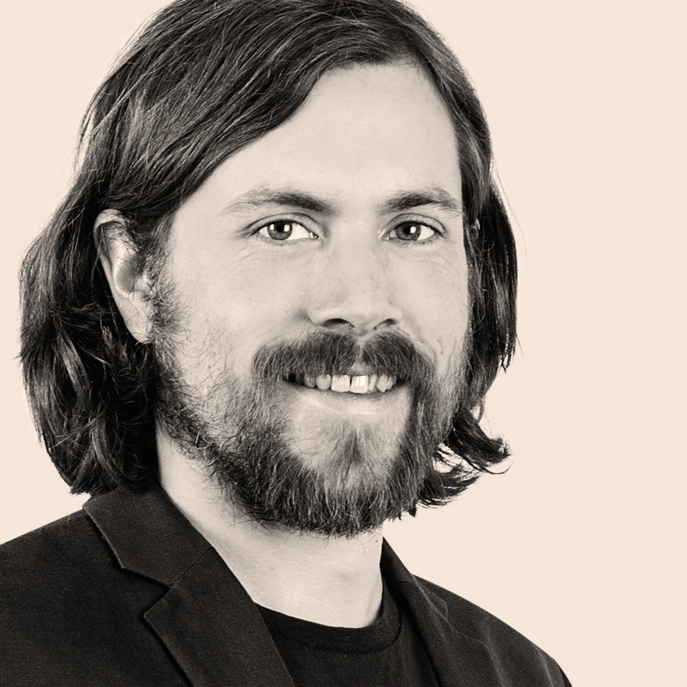

André Kaltenbach

Summary
I'm a physicist who is going to become a web developer. Besides coding skills I can provide ten years of experience in project work in a team, either as team member or team leader.
Work Experience
Laser Components Germany GmbH
Olching, Germany
R&D department
since 02/2018
- Optoelectronic technologies
- Software development Python/C++
- Measurement systems
- Automation
- Optical and thermal simulation
Ferdinand-Braun-Institut, Leibnitz-Institut für Höchstfrequenztechnik
Berlin, Germany
Optoelectronics department, Laser Modules Lab
08/2013 - 07/2017
- Pulsed diode lasers and diode laser modules
- optical simulation (Python)
PicoQuant GmbH
Berlin, Germany
R&D department
08/2013 - 07/2017
- Diode laser pumped fiber laser systems
SIG Combobloc GmbH
Linnich, Germany
Electronics department
- maintenance and repair of industrial machines
Education
Master of Science, Physics
Technische Universität Berlin, Berlin, Germany
10/2010 - 06/2013
Bachelor of Science, Physics
Technische Universität Berlin, Berlin, Germany
10/2006 - 09/2010
Abitur (general qualification for university entrance)
Berlin-Kolleg, Berlin, Germany
08/2003 - 04/2006
Civilian service
Deutsches Rotes Kreuz
Jülich, Germany
05/2002 - 03/2003
Vocational training, Electronics
SIG Combibloc GmbH, Linnich, Germany
08/1998 - 02/2002
Skills
Coding
Languages
- German (native)
- English (C1)
Software
- Visual Studio Code
- Visual Studio
- PyCharm
- Microsoft Office
Soft Skills
- Project management
- team player
- team leading
Contact Me
My hobbies